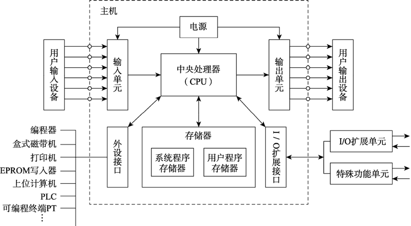

首页 > 编程笔记
PLC是什么（超级详细）
随着计算机技术的发展，存储逻辑开始进入工业控制领域。可编程序控制器（Programmable Logic Controller，PLC）作为通用的工业控制计算机，是存储逻辑在工业应用的代表性成果。
自从 1969 年第一台 PLC 研制成功并应用到汽车制造自动装配生产线上以来，PLC 不断更新换代。特别是近二十年来，可编程序控制器技术发展迅速，功能日益强大，在生产过程中应用十分广泛，作为工业自动化技术三大支柱之一在经济领域中发挥着越来越重要的作用。
PLC 是以传统顺序控制器为基础，综合了计算机技术、微电子技术、自动控制技术、数字技术和通信网络技术而形成的新型通用工业自动控制装置，是现代工业控制的重要支柱。本节主要介绍 PLC 的用途、特点、分类及性能指标。
目前，PLC 在国内外已广泛应用于钢铁、采矿、水泥、石油、化工、电力、机械制造、汽车、装卸、造纸、纺织、环保和娱乐等行业。
PLC 的应用范围通常可分成以下 5 类。
PLC 应用于单机控制、多级群控、生产自动线控制等场景，例如注塑机械、印刷机械、订书机械、包装机械、切纸机械、组合机床、磨床、装配生产线、电镀流水线及电梯控制等。
相对来说，位置控制模块比计算机数字控制（Computer Number Control，CNC）装置体积更小，价格更低，速度更快，操作更方便。
目前各个厂家生产的 PLC，平均无故障时间都远超国际电工委员会（International Electrotechnical Commission，IEC）规定的 10 万小时，有的甚至达到了几十万小时。
更重要的是，PLC 控制系统的主要功能是通过程序实现的，因此在需要改变设备的控制功能时，只需修改程序及少量的接线，工作量是很小的，而这是一般继电器控制系统很难做到的。
PLC 的功能单元能方便地实现D/A、A/D转换以及PID运算，实现过程控制、数字控制等功能。它还可以和其他计算机系统、控制设备共同组成分布式或分散式控制系统，能够很好地满足各种控制的需要。
PLC 体积小、重量轻，便于安装。PLC 具有完善的自诊断及监视等功能，对于其内部的工作状态、通信状态、I/O点状态、异常状态和电源状态都有显示。工作人员通过它可以查出故障原因，便于迅速处理。
由于 PLC 具有上述特点，使得 PLC 的应用范围极为广泛，可以说只要有工厂、有控制要求就会有 PLC 的应用。
由于受控制点数所限，其控制功能有一定的局限性。但是，小型 PLC 小巧、灵活，可以直接安装在电气控制柜内，很适合单机控制或小型系统的控制。
德国西门子（SIEMENS）公司（以下简称西门子公司）的 S7-200 和 S7-1200 系列、日本三菱公司的 FX 系列等均属于小型 PLC。
由于中型 PLC 控制点数较多，控制功能很强，可用于对设备直接控制，还可以对多个下一级的 PLC 进行监控，适用于中型或大型控制系统的控制。
西门子公司的 S7-300 系列、日本 OMRON 公司的 C200H 系列、日本三菱公司的 Q 系列的部分机型均属于中型PLC。
大型 PLC 不仅可用于对设备直接控制，还可以对多个下一级的 PLC 进行监控，组成一个集散的生产过程控制系统。大型 PLC 适用于设备自动化过程、过程自动化控制和过程监控系统。
西门子公司的 S7-400 系列、日本 OMRON 公司的 CVM1 和 CS1 系列、日本三菱公司的 Q 系列的部分机型均属于大型 PLC。
这类 PLC 只适合小规模的简单控制，在联网中一般适合作为从站使用。例如，西门子公司的 S7-200 系列就属于这一类。
这类 PLC 不仅能完成小规模的控制任务，也可以完成较大规模的控制任务，在联网中既可以作为从站使用，也可以作为主站使用。例如，西门子公司的 S7-300 系列就属于这一类。
这类 PLC 不仅能完成中等规模的控制任务，也可以完成规模很大的控制任务，在联网中一般作为主站使用。例如，西门子公司的 S7-400 系列就属于这一类。
PLC 按结构可以分为整体式和组合式两类。
一个基本单元就是一台完整的PLC，可以实现各种控制。控制点数不符合需要时，可再连接扩展单元，扩展单元不带CPU。基本单元和若干扩展单元可组成较大的系统。
整体式结构的优点是非常紧凑、体积小、成本低、安装方便，其缺点是输入与输出点数有限定的比例。小型PLC多为整体式结构。例如西门子公司的S7-200系列和日本三菱公司的FX系列PLC即为整体式结构。
整体式 PLC 的组成如下图所示：
例如，一些 PLC 除了基本的 I/O 模块外，还有一些特殊功能模块，像温度检测模块、位置检测模块、PID 控制模块、通信模块等。组合式结构的 PLC 采用搭积木的方式，通过在一块基板上插上所需模块来组成系统。
组合式结构的 PLC 特点是 CPU、输入、输出均为独立的模块，模块尺寸统一，安装简便，I/O 模块（按点数）选型自由，安装调试、扩展和维修方便。
中型机和大型机多为组合式结构，例如，西门子公司的 S7-300 系列、S7-400 系列以及日本三菱公司的 Q 系列 PLC。
组合式 PLC 的构成如下图所示，模块之间通过底板上的总线相互联系。CPU 与各扩展模块之间若通过电缆连接，距离一般不应超过 10m。

图 2 组合式 PLC 构成示意图
一般指标主要体现在环境温度、环境湿度、抗振、抗冲击、抗噪声、抗干扰和耐压等性能上。
输入特性主要体现在输入电路的隔离程度、输入灵敏度、响应时间和所需电源等性能上。
输出特性主要体现在回路构成（这里指的是继电器输出、晶体管输出或晶闸管输出）、回路隔离、最大负载、最小负载、响应时间和外部电源等性能上。
程序容量是指 PLC 的内存和外存的大小，一般从几千字节到几兆字节。存储器的类型一般为 RAM、EPROM 和 EEPROM。
编程语言是指 PLC 用来编制用户程序的语言。PLC 可以使用的编程语言很多，有梯形图、语句表、顺序功能图和功能块图等。每多一种编程语言都会使编制用户程序更快捷、更方便。
通信功能是指 PLC 是否具有通信能力以及具有何种通信能力。一般可分为远程 I/O 通信、计算机通信、点到点通信、高速总线、MAP 网等。当前，通信能力是衡量 PLC 性能的一项主要指标。
运行速度是指操作处理时间的长短，可以用基本指令执行时间来衡量，时间越短越好，一般在微秒级以下。指令的功能越强，说明 PLC 的性能越佳。
元件种类和数量的多少不仅反映了 PLC 的性能，也说明了 PLC 的规模。I/O 元件的数量说明了PLC的输入输出能力；I/O 元件的种类（直流、交流、模拟量、高速计数、定位、PID）多少，说明了 PLC 性能的高低。
在了解了 PLC 的各种指标后，就可以根据具体控制工程的要求，从众多 PLC 中选取合适的产品了。
自从 1969 年第一台 PLC 研制成功并应用到汽车制造自动装配生产线上以来，PLC 不断更新换代。特别是近二十年来，可编程序控制器技术发展迅速，功能日益强大，在生产过程中应用十分广泛，作为工业自动化技术三大支柱之一在经济领域中发挥着越来越重要的作用。
PLC 是以传统顺序控制器为基础，综合了计算机技术、微电子技术、自动控制技术、数字技术和通信网络技术而形成的新型通用工业自动控制装置，是现代工业控制的重要支柱。本节主要介绍 PLC 的用途、特点、分类及性能指标。
PLC的用途
最近十几年来，随着微处理芯片及有关元件的价格大幅度下降，PLC 的价格也随之下降，而功能却大大增强，能解决复杂的计算和通信问题，因而 PLC 的应用面越来越广。目前，PLC 在国内外已广泛应用于钢铁、采矿、水泥、石油、化工、电力、机械制造、汽车、装卸、造纸、纺织、环保和娱乐等行业。
PLC 的应用范围通常可分成以下 5 类。
1) 顺序控制
顺序控制是 PLC 应用最广泛的领域，也是最适合 PLC 发挥特长的领域。PLC 顺序控制用来取代传统的继电器顺序控制。PLC 应用于单机控制、多级群控、生产自动线控制等场景，例如注塑机械、印刷机械、订书机械、包装机械、切纸机械、组合机床、磨床、装配生产线、电镀流水线及电梯控制等。
2) 运动控制
PLC 制造商目前已提供了步进电动机或伺服电动机的单轴或多轴位置控制模块。在多数情况下，PLC 把描述目标位置的数据发送给控制模块，其输出移动一轴或数轴以达到目标位置。每个轴移动时，位置控制模块保持适当的速度和加速度，确保运动平滑。相对来说，位置控制模块比计算机数字控制（Computer Number Control，CNC）装置体积更小，价格更低，速度更快，操作更方便。
3) 过程控制
PLC 还能监控大量的物理参数，例如温度、压力、流量、液位和速度等。比例-积分-微分（Proportion Integration Differentiation，PID）模块使 PLC 具有闭环控制的功能，即一个具有 PID 控制能力的 PLC 可用于过程控制。当过程控制中某个变量出现偏差时，PID 控制算法会计算出正确的控制量，把输出保持在设定值上。4) 数据处理
在机械加工中，PLC 作为主要的控制和管理系统用于 CNC 系统中，可以完成大量的数据处理工作。5) 通信网络
PLC 的通信包括主机与远程 I/O 之间的通信、多台 PLC 之间的通信、PLC 与其他智能控制设备（如计算机、变频器、数控装置等）之间的通信。PLC 与其他智能控制设备一起，可以组成“集中管理、分散控制”的分布式控制系统。PLC的特点
1) 可靠性高，抗干扰能力强
为了满足工业生产对控制设备安全性与可靠性的要求，PLC 采用了微电子技术，大量的开关动作是由无触点的半导体电路来完成的，在结构上充分考虑了工业生产环境下温度、湿度、粉尘、振动等方面的影响：在硬件上采用了隔离、滤波、屏蔽、接地等抗干扰措施；在软件上采用了故障诊断、数据保护等措施。这些技术使得 PLC 具有较高的抗干扰能力。目前各个厂家生产的 PLC，平均无故障时间都远超国际电工委员会（International Electrotechnical Commission，IEC）规定的 10 万小时，有的甚至达到了几十万小时。
2) 通用灵活
PLC 产品已经序列化生产，结构形式多种多样，在机型选择上有很大的余地。另外，PLC 及外围模块品种多，用户可以根据不同任务的要求，选择不同的组件灵活组合成具有不同硬件结构的控制装置。更重要的是，PLC 控制系统的主要功能是通过程序实现的，因此在需要改变设备的控制功能时，只需修改程序及少量的接线，工作量是很小的，而这是一般继电器控制系统很难做到的。
3) 编程简单方便
PLC 应用程序的编制非常方便。编程可采用与继电器接触器控制电路十分相似的梯形图语言，这种编程语言形象直观，容易掌握，即使没有计算机知识的人也很容易掌握。而顺序功能图（Sequential Function Chart，SFC）是一种结构块控制流程图，可使编程更加简单方便。4)功能完善，扩展能力强
PLC 的输入／输出系统功能完善，性能可靠，能够适应各种形式和性质的开关量和模拟量的输入／输出。PLC 的功能单元能方便地实现D/A、A/D转换以及PID运算，实现过程控制、数字控制等功能。它还可以和其他计算机系统、控制设备共同组成分布式或分散式控制系统，能够很好地满足各种控制的需要。
5) 设计、施工、调试的周期短，维护方便
继电器接触器控制系统中的中间继电器、时间继电器、计数器等电器元件，在 PLC 控制系统中是以“软元件”形式出现的，并且又用程序代替了硬接线，因此安装接线工作量少；工作人员也可提前根据具体的控制要求在 PLC 到货之前进行编程，大大地缩短了施工工期。PLC 体积小、重量轻，便于安装。PLC 具有完善的自诊断及监视等功能，对于其内部的工作状态、通信状态、I/O点状态、异常状态和电源状态都有显示。工作人员通过它可以查出故障原因，便于迅速处理。
由于 PLC 具有上述特点，使得 PLC 的应用范围极为广泛，可以说只要有工厂、有控制要求就会有 PLC 的应用。
PLC的分类
PLC 是应现代化生产的需要而产生的，PLC 的分类也必然要符合现代化生产的需求。一般来说，可以从 3 个角度对 PLC 进行分类，即控制规模、控制性能、结构特点。1、按PLC的控制规模分类
PLC按控制规模可以分为小型 PLC、中型 PLC 和大型 PLC。1) 小型PLC
小型 PLC 一般指输入／输出点数（I/O 点数）小于 256 点、采用单 CPU（8位或16位）、用户程序存储器的容量在 4KB 以下的PLC，以开关量控制为主。由于受控制点数所限，其控制功能有一定的局限性。但是，小型 PLC 小巧、灵活，可以直接安装在电气控制柜内，很适合单机控制或小型系统的控制。
德国西门子（SIEMENS）公司（以下简称西门子公司）的 S7-200 和 S7-1200 系列、日本三菱公司的 FX 系列等均属于小型 PLC。
2) 中型PLC
中型 PLC 一般指 I/O 点数为 256~2048 点、采用双 CPU 或多 CPU、用户程序存储器的容量为 2~8KB 或更大的 PLC，具有开关量和模拟量的控制功能以及更强的数字计算能力。由于中型 PLC 控制点数较多，控制功能很强，可用于对设备直接控制，还可以对多个下一级的 PLC 进行监控，适用于中型或大型控制系统的控制。
西门子公司的 S7-300 系列、日本 OMRON 公司的 C200H 系列、日本三菱公司的 Q 系列的部分机型均属于中型PLC。
3) 大型PLC
大型 PLC 一般指 I/O 点数大于 2048 点采用双 CPU 或多 CPU（16 位或 32 位）、用户程序存储器的容量为 8~16KB 或更大的 PLC。由于其控制点数多，控制功能很强，有很强的计算能力，运行速度很高，不仅能完成较复杂的算术运算，还能进行复杂的矩阵运算。大型 PLC 不仅可用于对设备直接控制，还可以对多个下一级的 PLC 进行监控，组成一个集散的生产过程控制系统。大型 PLC 适用于设备自动化过程、过程自动化控制和过程监控系统。
西门子公司的 S7-400 系列、日本 OMRON 公司的 CVM1 和 CS1 系列、日本三菱公司的 Q 系列的部分机型均属于大型 PLC。
2、按PLC的控制性能分类
PLC 按控制性能可以分为低档机、中档机和高档机。1) 低档机
这类 PLC 具有基本的控制功能和一般的运算能力，工作速度比较低，支持的输入和输出模块的数量和种类比较少。这类 PLC 只适合小规模的简单控制，在联网中一般适合作为从站使用。例如，西门子公司的 S7-200 系列就属于这一类。
2) 中档机
这类 PLC 具有较强的控制功能和较强的运算能力，不仅能完成一般的逻辑运算，也能完成比较复杂的三角函数运算、指数运算和 PID 运算，工作速度比较快，支持的输入和输出模块的数量比较多，输入和输出模块的种类也比较多。这类 PLC 不仅能完成小规模的控制任务，也可以完成较大规模的控制任务，在联网中既可以作为从站使用，也可以作为主站使用。例如，西门子公司的 S7-300 系列就属于这一类。
3) 高档机
这类 PLC 具有强大的控制功能和强大的运算能力，不仅能完成逻辑运算、三角函数运算、指数运算和 PID 运算，还能进行复杂的矩阵计算，工作速度很快，能够带动的输入和输出模块的数量很多，种类全面。这类 PLC 不仅能完成中等规模的控制任务，也可以完成规模很大的控制任务，在联网中一般作为主站使用。例如，西门子公司的 S7-400 系列就属于这一类。
PLC 按结构可以分为整体式和组合式两类。
3、按PLC的结构分类
1) 整体式
整体式结构的 PLC 把电源、CPU、存储器、I/O 系统紧凑地安装在一个标准机壳内，作为一个整体，构成 PLC 的基本单元。一个基本单元就是一台完整的PLC，可以实现各种控制。控制点数不符合需要时，可再连接扩展单元，扩展单元不带CPU。基本单元和若干扩展单元可组成较大的系统。
整体式结构的优点是非常紧凑、体积小、成本低、安装方便，其缺点是输入与输出点数有限定的比例。小型PLC多为整体式结构。例如西门子公司的S7-200系列和日本三菱公司的FX系列PLC即为整体式结构。
整体式 PLC 的组成如下图所示：

图 1 整体式PLC组成示意图
图 1 整体式PLC组成示意图
2) 组合式
组合式结构的 PLC 是把 PLC 系统的各个组成部分按功能分成若干模块，如 CPU 模块、输入模块、输出模块、电源模块等，将这些模块插在框架或基板上即可组成一套完整的控制系统。虽然各模块功能比较单一，但模块的种类却日趋丰富。例如，一些 PLC 除了基本的 I/O 模块外，还有一些特殊功能模块，像温度检测模块、位置检测模块、PID 控制模块、通信模块等。组合式结构的 PLC 采用搭积木的方式，通过在一块基板上插上所需模块来组成系统。
组合式结构的 PLC 特点是 CPU、输入、输出均为独立的模块，模块尺寸统一，安装简便，I/O 模块（按点数）选型自由，安装调试、扩展和维修方便。
中型机和大型机多为组合式结构，例如，西门子公司的 S7-300 系列、S7-400 系列以及日本三菱公司的 Q 系列 PLC。
组合式 PLC 的构成如下图所示，模块之间通过底板上的总线相互联系。CPU 与各扩展模块之间若通过电缆连接，距离一般不应超过 10m。
图 2 组合式 PLC 构成示意图
PLC的技术指标
PLC 的技术指标包括硬件指标和软件指标。1、硬件指标
硬件指标包括一般指标、输入特性和输出特性。一般指标主要体现在环境温度、环境湿度、抗振、抗冲击、抗噪声、抗干扰和耐压等性能上。
输入特性主要体现在输入电路的隔离程度、输入灵敏度、响应时间和所需电源等性能上。
输出特性主要体现在回路构成（这里指的是继电器输出、晶体管输出或晶闸管输出）、回路隔离、最大负载、最小负载、响应时间和外部电源等性能上。
2、软件指标
软件指标主要包括程序容量、编程语言、通信功能、运行速度、指令类型、元件种类和数量等。程序容量是指 PLC 的内存和外存的大小，一般从几千字节到几兆字节。存储器的类型一般为 RAM、EPROM 和 EEPROM。
编程语言是指 PLC 用来编制用户程序的语言。PLC 可以使用的编程语言很多，有梯形图、语句表、顺序功能图和功能块图等。每多一种编程语言都会使编制用户程序更快捷、更方便。
通信功能是指 PLC 是否具有通信能力以及具有何种通信能力。一般可分为远程 I/O 通信、计算机通信、点到点通信、高速总线、MAP 网等。当前，通信能力是衡量 PLC 性能的一项主要指标。
运行速度是指操作处理时间的长短，可以用基本指令执行时间来衡量，时间越短越好，一般在微秒级以下。指令的功能越强，说明 PLC 的性能越佳。
元件种类和数量的多少不仅反映了 PLC 的性能，也说明了 PLC 的规模。I/O 元件的数量说明了PLC的输入输出能力；I/O 元件的种类（直流、交流、模拟量、高速计数、定位、PID）多少，说明了 PLC 性能的高低。
3、主要性能指标介绍
1) 存储容量
这里的存储容量指用户程序存储器的容量。存储容量决定了 PLC 可以容纳的用户程序的大小，一般以字节为单位计算。每 1024 字节为 1KB。中、小型 PLC 的存储容量一般在 8KB 以下，大型 PLC 的存储容量可达到 256KB~2MB。也有的 PLC 用存放用户程序指令的条数来表示容量，一般中、小型的 PLC 存储指令的条数为 2000 条。2) 输入/输出（I/O）点数
I/O 点数指输入点数及输出点数之和。I/O 点数越多，外部可接入的输入器件和输出器件就越多，控制规模就越大，因此 I/O 点数是衡量 PLC 规模的指标。国际上流行将 I/O 总点数在 64 点及以下的 PLC 称为微型 PLC；64~256 点的称为小型 PLC；256~2048 点的称为中型 PLC；2048 点以上的称为大型 PLC。3) 扫描速度
扫描速度是指 PLC 执行程序的速度。一般以执行 1KB 所用的时间来衡量扫描速度。不同功能的指令执行速度差别较大，目前也有以布尔指令的执行速度来表征 PLC 工作的快慢。有些品牌的 PLC 在用户手册中给出执行各种指令所用的时间，可以通过比较各种 PLC 执行类似操作所用的时间来衡量 PLC 工作速度的快慢。4) 指令的功能和数量
指令功能的强弱及数量的多少体现了 PLC 能力的强弱。一般来说编程指令种类及条数越多，处理能力、控制能力就越强，用户程序的编制也就越容易。5) 内部元件的种类及数量
在编制程序时，需要用到大量的内部元件来存储变量、中间结果、定时计数信息、模块设置参数及各种标志位等。这类元件的种类及数量越多，表示 PLC 的信息处理能力越强。6) 智能单元的数量
为了完成一些特殊的控制任务，PLC 厂商都为自己的产品设计了专用的智能单元，如模拟量控制单元、定位控制单元、速度控制单元以及通信工作单元等。智能单元种类的多少和功能的强弱是衡量 PLC 产品水平高低的重要指标。7) 扩展能力
PLC 的扩展能力含 I/O 点数的扩展、存储容量的扩展、联网功能的扩展及各种模块的连接扩展等。绝大部分 PLC 可以用 I/O 扩展单元进行 I/O 点数的扩展；有的 PLC 可以使用各种功能模块进行扩展。但 PLC 的扩展功能总是有限制的。在了解了 PLC 的各种指标后，就可以根据具体控制工程的要求，从众多 PLC 中选取合适的产品了。
关注公众号「站长严长生」，在手机上阅读所有教程，随时随地都能学习。内含一款搜索神器，免费下载全网书籍和视频。

微信扫码关注公众号